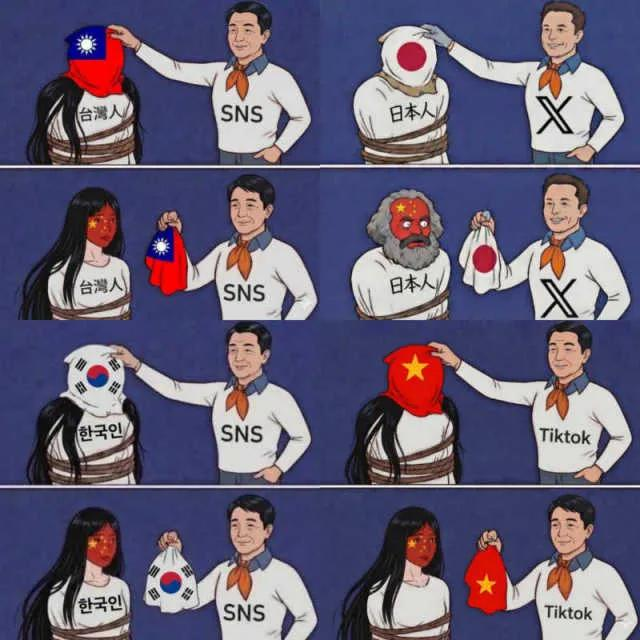

어딜 가도 있는 중국인 분탕,갈라치기

어딜 가도 있는 중국인 분탕,갈라치기
대만새끼들 하는 짓보면 답 나옴
한국이 지금처럼 잘살기는 힘들듯
마오쩌뚱이 이겨서 민주주의 된다는게 무슨소리야? 반대로 쓴거?
아 장제스인데 잘못썼다 ㅜ 안고쳐지네
장제스도 민주주의자라기보단 민족주의나 파시즘에 가까운 인물이긴함
장제스도 대만본토에서 했던짓 보면 흠..
마오쩌둥이 이긴 세상. 바로 이 지구입니다.
그 나라 보셈
미합'중국'의 주변국가들 꼬라지 보면 알 수 있잖음
일단 한반도는 통일했을듯? 난 그걸로 다 만족해
중국은 압제에 의해 유지되는거지 분명 분열되야하는 나라가 맞음
티베트 신장 부터 ㅋㅋ 내몽골 홍콩 다 떨어져나갔을듯
장제스가 중국대륙을 잡고 있다가
국공내전으로 마오쩌뚱한테 중국전체를 홀랑 다 뺐겼을지 생각해보면
장제스도 똥볼을 만만치 않게 찼을거야
우선은 소련이랑 중국 국경이 바로 맞닿게 되고
그 국경의 끝자락에 분단이 안 되었을 우리나라가 있게되지
자유중국 한 길면 30년 하다가 다시 북중국 남중국으로 갈라졌을 거 같음 물론 위구르랑 티베트는 독립된 채로. 보너스로 한국은 통일 상태고.
군벌시대부터 중일전쟁, 국공내전까지 장제스한테 온갖 억까에 끝을 모르는 고혈압 테스트였긴 했지만 장제스 본인도 국민당, 군벌, 민심 뭐 하나 제대로 못 잡았던 거 보면 금마도 제3세계식 파시즘 독재 아니었으면 답 없었음ㅋㅋㅋ
중화민족주의 파시즘 국가가 주변국한테 뭔 짓 했을 지는...
1. 루즈벨트의 아들이었던 엘리엇의 회고록에 따르면 "처칠과 장제스는 한국의 운명에는 관심이 없어 보였으며 장제스는 만주와 한반도에 대한 재점령 야심을 품고있음"이라고 밝히고 있음. 이에 대해 루즈벨트가 "중국이 만주, 대만은 가질 수 있는데 한반도는 못가짐" 이라고 단호하게 선까지 그어줌.
2. 장제스는 임시정부를 후원하긴 했지만 공식 승인해주진 않았는데 그 이유를 묻는 주중미대사 고스의 질문에 조소앙은 "일본 패전 후 한국을 중국의 종주권 아래 두려는 욕망 때문"이라고 답함. 결국 임시정부는 광복까지 중화민국으로부터 정식 외교승인을 받지 못했음.
걍 중국은 국공 둘다 터지고 군벌들로 분열되어있는게 가장 알맞았음
왜 일본은 중국인 마르크스인데?
일본공산당 당원인척하는건가봄
유튜브 댓글중 한국이나 중국이나 같다는 댓글중에 중국인 숨어있는거같던데
있다고하고 많다고해도 이악물고 없다 잡으니 아니다 하는애들 개많음 걔들임
소수가 갈라치기 페미같은거 계속전파하고 본인은 안잡히는건데
잡으니까 한국인이던데 ㅇㅈㄹ
이미 조X족게이트로 제대로 떳었는데도 엄청 순식간에 묻힘
나는 개인이오
ip표기는 필수로 해야함 디시유동닉처럼
왜 일본만 중국 마르크스임?
베트남은 왜 옷에 글자가 없어 ㅋㅋㅋ
만약에 만약에 중국이 마오쩌뚱이 이겨서 민주주의 됐으면 지금 우리나라에 더 큰 위협이 될까 아님 큰 동맹국이 되었을까.. 의미없는 질문이긴 하지만 매번 중국이 저렇게 똥을 싸는데 민주주의 중국이었다면 궁금하다